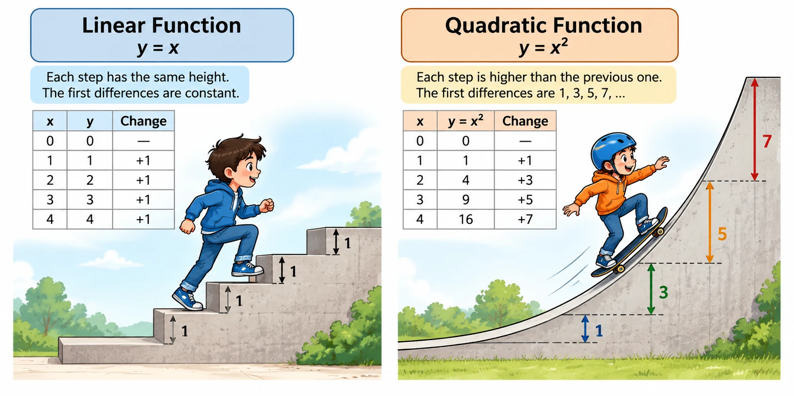

Linear Function · y = x
For equal increases in x, y increases by the same amount each time. The first differences are constant: 1, 1, 1, 1, …
See how numbers change, how graphs grow, and how patterns reveal the structure of a mathematical relationship. Visual explanations make abstract ideas easier to notice, compare, and understand.
A linear pattern grows by equal steps. A quadratic pattern grows by steps that change in a regular way. Comparing the step heights helps us see the difference between linear and quadratic relationships.

For equal increases in x, y increases by the same amount each time. The first differences are constant: 1, 1, 1, 1, …
For equal increases in x, the first differences change: 1, 3, 5, 7, … The second differences are constant.
A quadratic rule can describe how the height of a ramp changes as horizontal distance increases. The step pattern helps calculate each support height before the structure is built.
See the Ramp Design →
Patterns are not just number lists. They are clues. By studying how the differences change, we can recognize a relationship, predict what comes next, and connect a formula to its graph and real-world meaning.